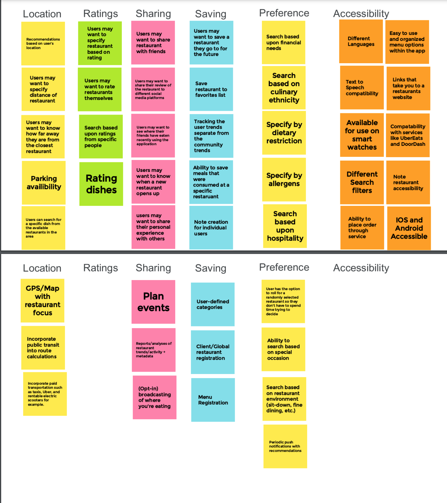
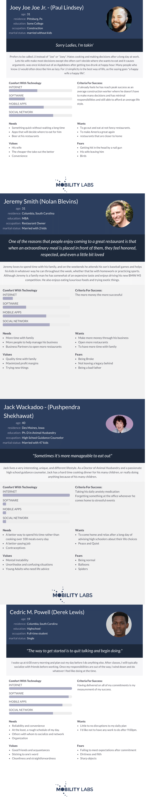
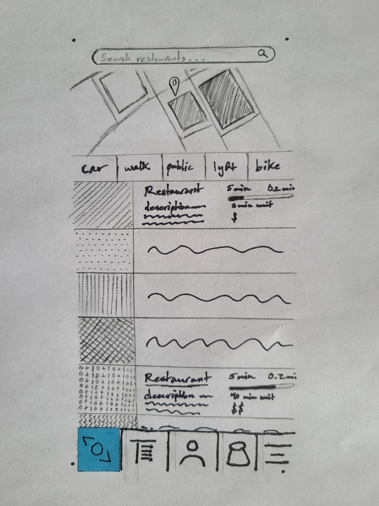
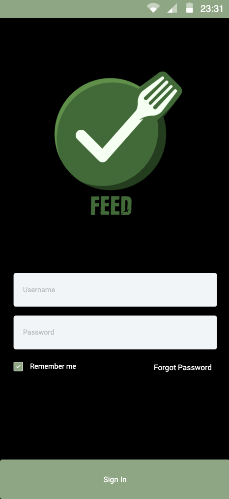

Problem Statement: Restauraunt Decisions

Too much time is wasted looking for places to eat, especially when it is a mutual decision. The wasted time can lead to irritability and an increase of negative emotions on top of the fact that this is usually accompanied by hunger.
Affinity Diagram: Restauraunt Decisions
My team and i worked together to brainstorm ideas related to Restauraunt searching and potential customer needs.
Personas: Restauraunt Personas
My team and I worked together to create potential users of our Restauraunt application, leading to the development of four personas.
Storyboard: Restauraunt storyboard

We worked together to create four different stories that could lead to a potential new user of our application, leading to the brainstorming of potential feautures to be added.
Sketches

Potential ideas for application appeareance, in a rough form.
Paper Prototype
A paper display of the potential application interface for a mobile device
Hi-Fi Prototype
A High Fidelity prototype of our application with a mobile device interface.